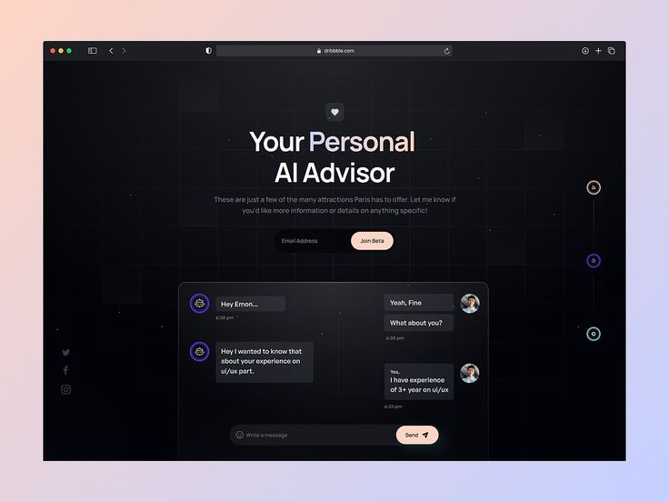

Latest Projects

Resume Ranking And screening
Created an AI-powered recruitment assistant that automates resume screening by analyzing candidate profiles and ranking them based on job requirements. The system uses machine learning and NLP techniques to extract key skills, experience, and education from resumes, ensuring fair and efficient shortlisting. Key Highlights: Resume parsing and feature extraction with NLP. Ranking algorithm based on job-role similarity score. Helps recruiters reduce manual effort and bias in hiring.

Forest Fire Detection using Sensor Network and IoT
Built a CNN-based wildfire detection model trained on satellite and image datasets to identify forest fires in real-time. The system enhances early warning capabilities by detecting fire patterns with high accuracy, contributing to disaster prevention and environmental safety. Key Highlights: Trained on The Wildfire Dataset (Kaggle). Achieved high accuracy with Convolutional Neural Networks (CNN). Potential for integration with drones or surveillance systems for real-time monitoring.

AI chatbot Using NLP
Developed an intelligent chatbot capable of engaging in natural, human-like conversations using NLP (Natural Language Processing) and machine learning techniques. The chatbot can understand user queries, provide contextual responses, and adapt to different conversational flows. Integrated with APIs for real-time data and deployed on a user-friendly interface for seamless interaction. Key Highlights: Built using Python and NLP frameworks (NLTK, spaCy, Transformers). Implemented intent recognition and sentiment analysis. Supports multi-turn conversations with contextual memory.